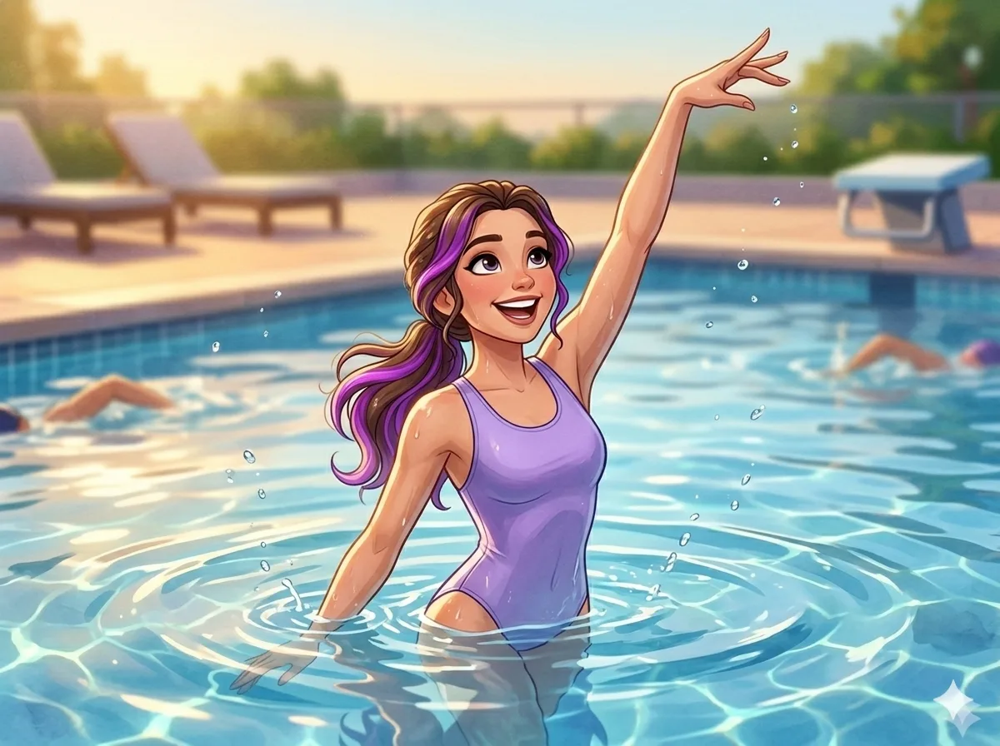
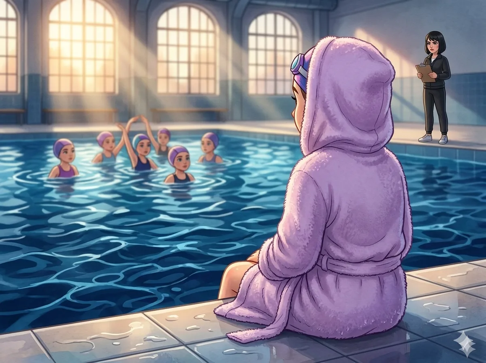
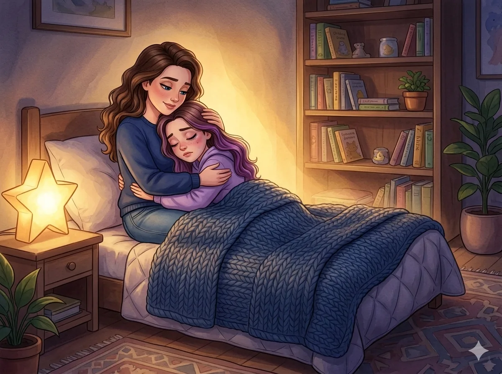
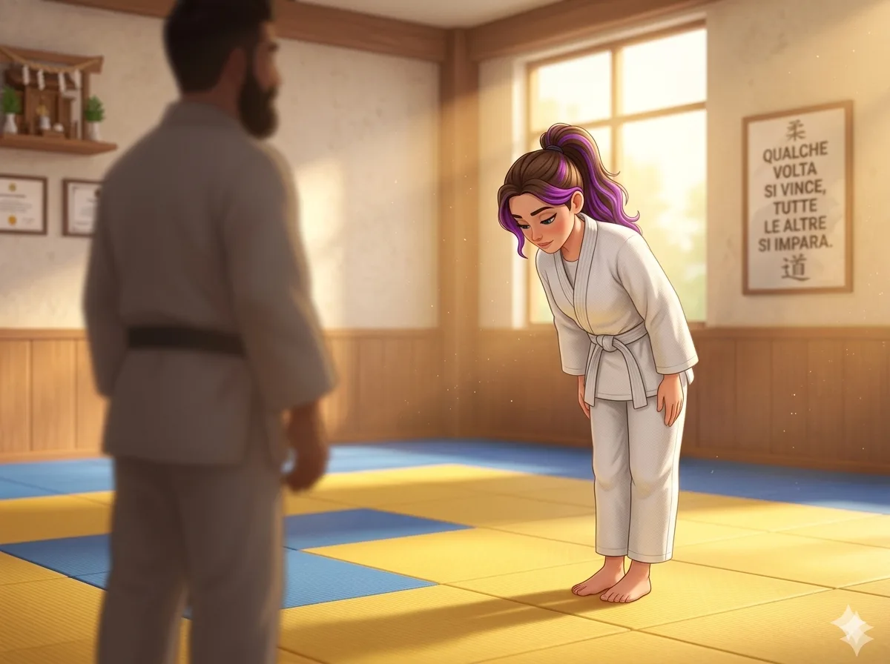
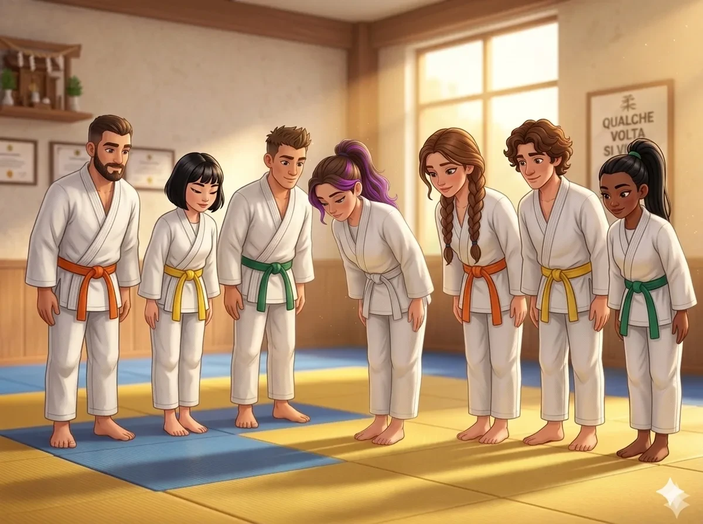
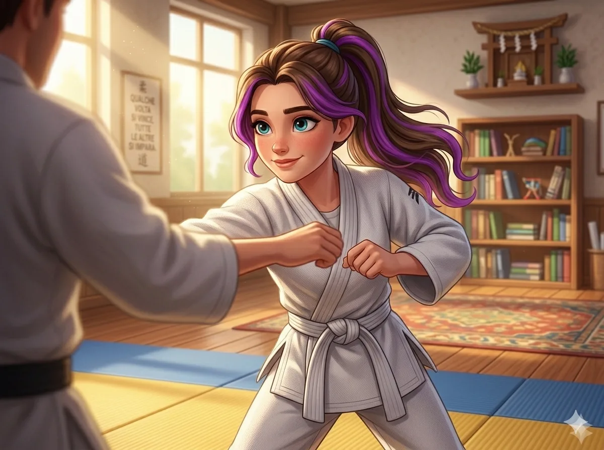

C’è un confine sottile, quasi invisibile, tra l’esigenza di un istruttore e l’abuso psicologico. È una linea tracciata sulla sabbia che spesso, nel nome del "talento", della "perfezione estetica" o della "vittoria a tutti i costi", viene calpestata con stivali chiodati da chi dovrebbe invece insegnare a volare.

Il bullismo sdoganato dagli adulti: se l'esempio è tossico
In quella piscina abbiamo imparato sulla nostra pelle una lezione pedagogica durissima: i bambini sono lo specchio fedele degli adulti che li guidano.
Non ascoltano quello che diciamo, assorbono quello che siamo.
Le istruttrici usavano l'aggressività come unico strumento educativo. Non erano semplici "correzioni tecniche": erano urla costanti, umiliazioni pubbliche mascherate da "tempra caratteriale".
La dinamica era subdola: se io ero presente nello spogliatoio o a bordo vasca, le acque apparivano calme.
Ma non appena voltavo le spalle, l'inferno si scatenava.
La cosa più atroce? Quel comportamento era diventato il "codice sorgente" del gruppo.
Le compagne, autorizzate dall'esempio delle adulte, avevano iniziato a perseguitarla. Se l'istruttrice può urlare a Beatrice che "non vale niente", allora noi possiamo bagnarle i vestiti. Se l'istruttrice la ignora, noi possiamo farle sparire le scarpe.
Un bullismo sistematico, nato sotto gli occhi di chi avrebbe dovuto proteggerla e che, invece, lo stava nutrendo attivamente con il proprio esempio.

Il pianto del "Basta"
Una sera, la corda si è spezzata.
Beatrice è crollata.
Ha pianto per quattro ore consecutive, un pianto viscerale, disperato, che veniva da un luogo troppo profondo per una ragazzina della sua età.
Si è addormentata tra le mie braccia a singhiozzi, sfinita dal dolore di dover rinunciare a ciò che amava per poter sopravvivere.
In quel momento, come mamma-professionista che vive in trincea, ho preso la decisione: Basta.
Nella nostra filosofia di vita e di studio, Life School Family, abbiamo una regola d'oro che è un pilastro del nostro benessere: accettiamo e cerchiamo la Fatica Sana, quella che ti fa sudare, che ti sfida a superare i tuoi limiti per un obiettivo che senti tuo. Ma bandiamo categoricamente la Sofferenza Inutile.
Nessun podio, nessuna coreografia perfetta, nessuna "passione" vale la distruzione dell'autostima di un bambino.
Abbiamo scelto la salute mentale sopra l'estetica.
Abbiamo scelto di proteggere quel "codice" unico che è Beatrice, invece di lasciare che venisse riscritto dall'odio.

Il passaggio di Beatrice non è stato solo un cambio di disciplina; è stata una migrazione dell'anima dal "blu elettrico" del cloro — dove ogni movimento doveva essere una riga dritta e perfetta — al "bianco candido" del judogi, una divisa pesante, materica, che profuma di bucato e di fatica onesta.
Nel sincro, l'elemento era l'acqua: un mondo dove devi lottare costantemente per non affondare e dove la grazia è un obbligo.
Nel Judo, l'elemento è la Terra.
Il Tatami non è solo un tappeto di gomma; è un suolo sacro dove il contatto fisico non è un'aggressione, ma una forma di comunicazione profonda.
Beatrice è passata dal "controllo assoluto" — quel dover essere sempre tesa e impeccabile — al "rilascio consapevole".

Devi sentire il peso dell'altro per capire il tuo.
L’accoglienza in questa palestra, la stessa dove corrono Ginevra e Federico, è stata un balsamo versato direttamente sulle ferite ancora aperte del bullismo.
Qui, la prima cosa che ti insegnano non è come colpire, ma come cadere.
È una rivoluzione filosofica: ti dicono che cadere fa parte del gioco, che il suolo ti accoglie e che se sai come farlo, non ti rompi.
Per una ragazzina che veniva da un ambiente dove ogni errore era punito con un urlo o con un vestito bagnato per sfregio, imparare che "cadere è lecito" è stata la sua prima, vera liberazione.
Qui non si danza per un pubblico invisibile o per giudici severi pronti a togliere punti; qui si combatte corpo a corpo per conoscersi.
Beatrice ha trovato un motto che ha agito come un antidoto al veleno che le avevano inculcato per un anno e mezzo:
"Qualche volta si vince, tutte le altre si impara."
In questo laboratorio di vita, l’errore ha cambiato natura: non è più una macchia sul curriculum, ma una porta d’ingresso per la comprensione.
Se cadi, l'avversario ti porge la mano per rialzarti.
Non è un gesto di facciata; è il codice del Tatami.
Abbiamo visto il miracolo della trasformazione: se gli adulti — gli istruttori, i maestri — danno l’esempio di una competitività sana, dove l'altro è il tuo specchio e non il tuo nemico, i bambini si allineano in un istante. Non c'è bisogno di lunghi discorsi. Beatrice l'ha sentito subito sulla pelle: non è più "sotto esame".
Non deve più controllare freneticamente se la sua borsa è ancora al suo posto o se le sue scarpe sono sparite.
È diventata parte di un corpo unico.
Nel Judo, non puoi allenarti da sola; hai bisogno di un compagno che si fidi di te e di cui tu possa fidarti.
Beatrice ha scoperto che la forza non sta nell'essere un'isola di perfezione, ma nel far parte di un gruppo dove l'altro è un alleato prezioso per la tua crescita.
Ha smesso di guardarsi le spalle e ha ricominciato a guardare avanti.

Una nota per insegnanti e genitori
Questa storia è per voi.
Questa storia non è solo lo sfogo di una mamma.
È un appello.
Che siate in una palestra, in una classe o in un salotto, ricordatevi che la vostra voce diventa la loro voce interiore.
Se usate l'umiliazione per ottenere risultati rapidi, state insegnando ai vostri allievi a umiliare i più deboli.
Non state creando campioni, state addestrando bulli e ferendo anime.
L'apprendimento passa per la relazione, sempre.
E la relazione, per essere generativa, deve essere un luogo sicuro.
Non esiste "eccellenza" che possa fiorire nel terrore.
Oggi Beatrice sorride di nuovo.
Ha perso uno sport che amava, è vero, ma ha ritrovato se stessa.
Ha imparato che ha il diritto di andarsene da dove non c'è rispetto.
E questa, per me, è la vittoria più grande che potesse mai conquistare su qualunque tatami o in qualunque piscina.
Un abbraccio di sana fatica (quella che ci fa crescere!),
Mary
